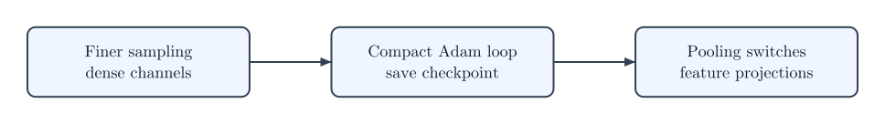
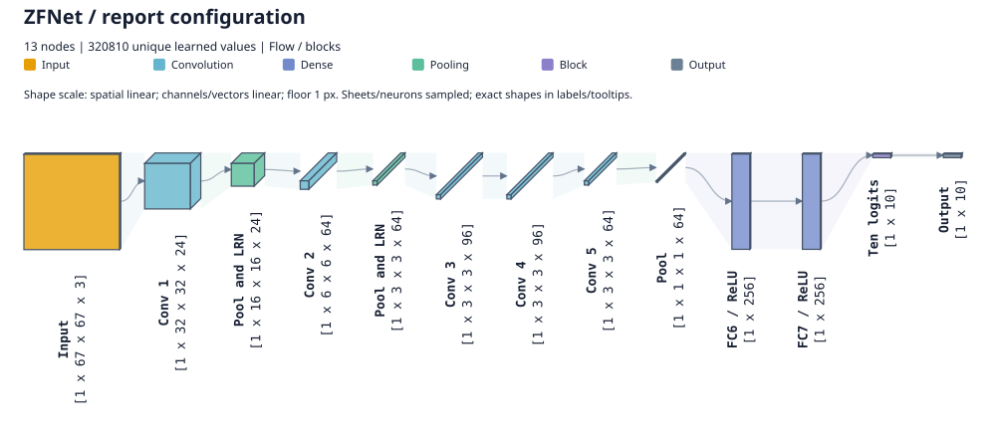
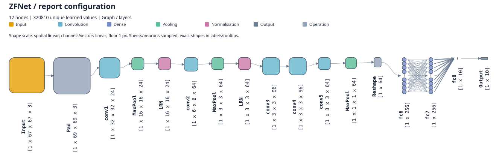
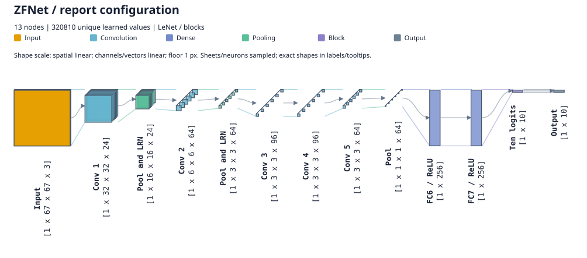
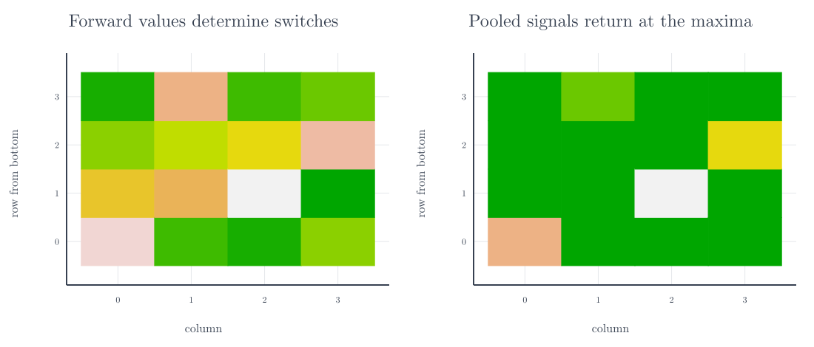
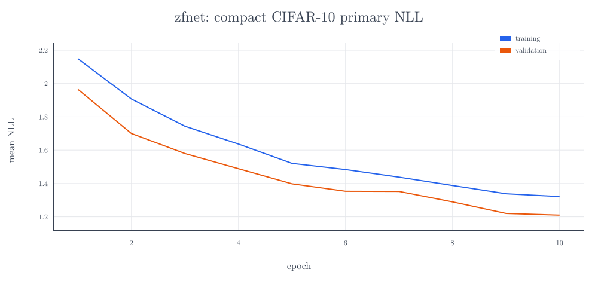
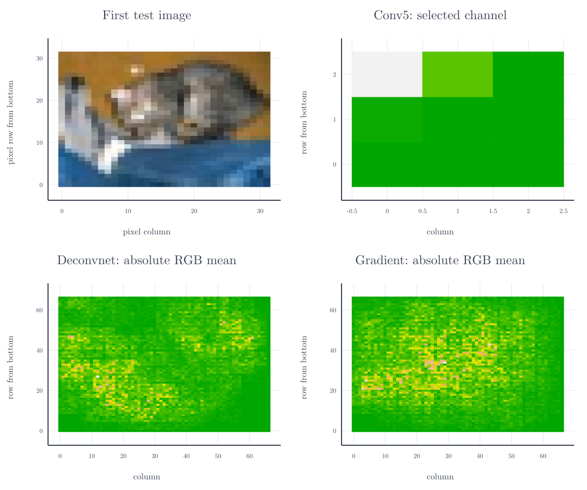
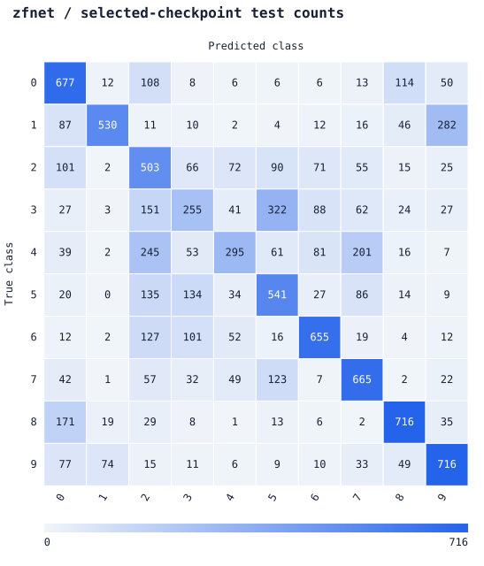

ZFNet: Finer Sampling and Deconvnet Feature Projections
Abstract
Large early strides can discard image detail before a network has learned useful features. ZFNet revises early sampling and uses deconvnet projections to inspect hidden responses. We verify its pooling switches and backward sign rule, train the complete compact topology with visible tensor Adam updates, and compare one feature projection with its ordinary input gradient.
Source example: examples/cpp/source/nn/1_convolutional_neural_networks/1.2_classic_architectures/zfnet.cpp.
The method
This Figure-3 variant uses dense channel connectivity throughout. A one-pixel spatial pad precedes a VALID 7×7 stride-two stem; SAME max-pooling gives the reference 224→110→55 sizes. VALID 5×5 stride-two conv2 and SAME pooling give 26→13. Three SAME 3×3 convolutions preserve 13, then VALID pooling gives 6. The widths are 96/256/384/384/256; two 4096-unit ReLU layers and 1000 logits give 62357608 learned scalars. LRN follows the first two pools. This differs from AlexNet's grouped layers and 11×11 stride-four stem. He/Glorot initializers and inverted .5 dropout are explicit adaptations. A dense convolution costs O(NHoWo k² Cin Cout).
Deconvnet sends an activation signal back through pooling switches and convolution adjoints. If s is a backward signal and W the forward kernel, each convolutional step is
At pooling, the signal returns to each window's forward argmax; overlapping contributions add. The convolution transpose uses the exact original input shape, including stride remainders. This rule gates on the sign of s. Ordinary ReLU differentiation gates on the forward activation. For forward (-1,2) and backward (3,-4), their outputs are respectively (3,0) and (0,-4). Guided backprop would gate on both signs and give (0,0) for this fixture. Deconvnet omits LRN inversion and bias subtraction; it is not a mathematical inverse or the derivative of a class score. The local switch VJP intentionally detaches its inputs, so this diagnostic is not a trainable layer.
The dataset fit keeps every stage at quarter widths, with two 256-unit dense layers and 67-pixel bilinear input resizing. It fits 12,000 CIFAR-10 images for ten epochs with batch size 128, Adam(.001), a .0001/2 kernel penalty, independent crops and flips, and .5 dropout. Validation NLL on 5,000 images selects a checkpoint, which is evaluated on all 10,000 official test images. A separate block reloads it and projects the strongest conv5 feature of the first test image using a unit signal, then compares ordinary differentiation with the same feature seed. Cached CIFAR-10 is required.
The concept diagram below is drawn by dm::graphics::Diagram. Its editable C++
source is the complete block below; regeneration uses the same datamunge toolchain
as the numerical examples. Exports consume the saved local SVG.
#include <dm/dm.hpp>
int main() {
std::filesystem::create_directories("build");
dm::graphics::Diagram diagram;
diagram.node("n0", {0.0, 0}, "Finer sampling\ndense channels");
diagram.node("n1", {5.2, 0}, "Compact Adam loop\nsave checkpoint");
diagram.node("n2", {10.4, 0}, "Pooling switches\nfeature projections");
diagram.edge("n0", "n1").edge("n1", "n2");
diagram.save_svg("build/zfnet_concept.svg");
}
Simple examples
The switch fixture is small enough to check all sixteen entries. Its signed two-channel companion isolates the backward gating rule.
Executed architecture diagram
The diagram below is generated by this model's forward function through
nn::Module::plot. Each style runs a zero-valued shape probe in inference mode;
it does not fit parameters or load a trained checkpoint. Shapes include the
example batch, and learned-value counts deduplicate shared tensors. The flow and LeNet views use named composite blocks; the graph view shows
functional layers and their actual branches. ModelPlotDetail::Operations
expands both into tensor primitives.
All views run left to right with node labels rotated 90 degrees counterclockwise.
Colors identify layer categories and are explained by the legend. The settings below
control fill/edge opacity, category colors, column/lane spacing, label content, font
size and wrapping. All views label names and exact shapes; aggregate learned-value counts remain in the heading. All three views use shared linear shape scales: face axes
follow spatial dimensions, depth follows channel count, and vector height follows
feature count. Batch size is excluded from geometry. A one-pixel visibility floor
keeps very small dimensions visible; it is disclosed in each figure. The scales can
instead use SquareRoot or Logarithmic compression explicitly. LeNet sheet counts
and graph neuron markers are bounded samples; their envelopes follow the shape scales.
Graph neuron bundles are drawn only for actual dense connections. Dots mark omitted
units. Wide diagrams can be scrolled at native size on the website.
Arrows follow the executed differentiable path; constants and deliberately
detached paths are not expanded. The visual conventions are inspired by
[VisualTorch's examples](https://visualtorch.readthedocs.io/en/latest/usage_examples/index.html).
#include <dm/dm.hpp>
int main() {
namespace n = dm::nn;
n::set_num_threads(2);
std::filesystem::create_directories("build");
n::ParameterStore p(17);
n::models::ZFNetConfig cfg;
cfg.image_size = 67;
cfg.classes = 10;
cfg.width_divisor = 4;
cfg.dense_width = 256;
n::Module model(
[&](const n::Tensor& image) {
const auto out = n::models::ZFNet(p, image, cfg, false);
n::model_stage("Conv 1", image, out.convolution[0]);
n::model_stage("Pool and LRN", out.convolution[0], out.normalized[0]);
n::model_stage("Conv 2", out.normalized[0], out.convolution[1]);
n::model_stage("Pool and LRN", out.convolution[1], out.normalized[1]);
n::model_stage("Conv 3", out.normalized[1], out.convolution[2]);
n::model_stage("Conv 4", out.convolution[2], out.convolution[3]);
n::model_stage("Conv 5", out.convolution[3], out.convolution[4]);
n::model_stage("Pool", out.convolution[4], out.pooling[2]);
n::model_stage("FC6 / ReLU", out.pooling[2], out.fc6);
n::model_stage("FC7 / ReLU", out.fc6, out.fc7);
n::model_stage("Ten logits", out.fc7, out.logits);
return out.logits;
},
"ZFNet / report configuration");
for (const auto style :
{n::ModelPlotStyle::Graph, n::ModelPlotStyle::LeNet, n::ModelPlotStyle::Flow}) {
n::ModelPlotOptions options;
options.style = style;
options.opacity = .8;
options.edge_opacity = .55;
options.funnel_opacity = .08;
options.colors.convolution = "#64B5CD";
options.colors.pooling = "#5ABF9A";
options.colors.dense = "#748BCB";
options.spacing.layer = 24;
options.spacing.lane = 12;
options.labels.type = n::ModelPlotLabel::NameAndShape;
options.labels.size = 13;
options.labels.wrap = 28;
options.sizing.spatial_scale = n::ModelPlotScale::Linear;
options.sizing.channel_scale = n::ModelPlotScale::Linear;
options.sizing.spatial_size = 96;
options.sizing.channel_size = 42;
options.sizing.minimum_extent = 1;
options.sizing.max_planes = 6;
options.detail =
style == n::ModelPlotStyle::Graph ? n::ModelPlotDetail::Layers : n::ModelPlotDetail::Blocks;
const auto diagram = model.plot(n::zeros({1, 67, 67, 3}), options);
if (diagram.parameter_count() != p.count())
return 1;
std::string output = "build/zfnet_architecture.svg";
if (style != n::ModelPlotStyle::Flow)
output.insert(output.size() - 4, style == n::ModelPlotStyle::Graph ? "_graph" : "_lenet");
diagram.save_svg(output);
const auto label = style == n::ModelPlotStyle::Graph ? "Graph / layers"
: style == n::ModelPlotStyle::LeNet ? "LeNet / blocks"
: "Flow / blocks";
std::print(
"{}: {} nodes, {} distinct learned values.\n",
label,
diagram.nodes().size(),
diagram.parameter_count());
}
}Graph / layers: 17 nodes, 320810 distinct learned values. LeNet / blocks: 13 nodes, 320810 distinct learned values. Flow / blocks: 13 nodes, 320810 distinct learned values.

Graph and LeNet views


#include <dm/dm.hpp>
int main() {
namespace n = dm::nn;
const auto x = n::tensor({1., 9., 2., 3., 4., 5., 6., 10., 7., 8., 12., 0., 11., 2., 1., 4.},
{1, 4, 4, 1});
const auto signal = n::tensor({1., 2., 3., 4.}, {1, 2, 2, 1});
const auto unpooled = n::models::UnpoolAtSwitches(x, signal, 2, 2, "VALID");
const auto expected = n::tensor(
{0., 1., 0., 0., 0., 0., 0., 2., 0., 0., 4., 0., 3., 0., 0., 0.}, {1, 4, 4, 1});
if (n::max(n::abs(unpooled - expected)).item() != 0)
return 1;
auto signed_input = n::tensor({-1., 2.}, {1, 1, 1, 2}).requires_grad_();
const auto backward = n::tensor({3., -4.}, {1, 1, 1, 2}),
identity = n::tensor({1., 0., 0., 1.}, {1, 1, 2, 2});
const auto ordinary = n::grad(n::sum(n::relu(signed_input) * backward), {signed_input})[0];
const auto deconv = n::models::DeconvLayer(signed_input, identity, backward, 1, "VALID");
if (ordinary.to_vector<int>() != std::vector<int>{0, -4} ||
deconv.to_vector<int>() != std::vector<int>{3, 0})
return 1;
auto layout = dm::graphics::RLayout::create(1, 2);
layout
.add(n::plot_tensor_map(x.reshape({4, 4}), 0, 12)
.title("Forward values determine switches"))
.add(n::plot_tensor_map(unpooled.reshape({4, 4}), 0, 4)
.title("Pooled signals return at the maxima"));
std::filesystem::create_directories("build");
layout.size(1100, 470).fit_panels().save_svg("build/zfnet_switches.svg");
std::print("Switch unpooling agrees exactly. Ordinary ReLU derivative {}; deconvnet "
"backward gate {}.\n",
ordinary.to_vector<int>(), deconv.to_vector<int>());
}Switch unpooling agrees exactly. Ordinary ReLU derivative [0, -4]; deconvnet backward gate [3, 0].

Checking the architecture
The canonical model checks every stage shape and parameter gradient. A compact fixture checks the backprojection grid.
#include <dm/dm.hpp>
int main() {
namespace n = dm::nn;
n::set_num_threads(2);
{
n::Generator fixture(23);
n::ParameterStore p(17);
const auto out = n::models::ZFNet(p, n::normal({1, 224, 224, 3}, 0., .2, fixture));
const std::array<int64_t, 5> spatial{110, 26, 13, 13, 13},
channels{96, 256, 384, 384, 256};
for (int i = 0; i < 5; ++i)
if (out.convolution[i].shape() != n::Shape{1, spatial[i], spatial[i], channels[i]})
return 1;
if (p.count() != 62357608 ||
out.pooling[0].shape() != n::Shape{1, 55, 55, 96} ||
out.pooling[1].shape() != n::Shape{1, 13, 13, 256} ||
out.pooling[2].shape() != n::Shape{1, 6, 6, 256} ||
out.fc6.shape() != n::Shape{1, 4096} || out.fc7.shape() != n::Shape{1, 4096} ||
out.logits.shape() != n::Shape{1, 1000})
return 1;
const auto gradients = n::grad(n::mean(n::square(out.logits)), p.parameters());
for (const auto &gradient : gradients) {
const double magnitude = n::max(n::abs(gradient)).item();
if (!std::isfinite(magnitude) || magnitude <= 0.)
throw std::runtime_error("Expected a finite nonzero gradient through every parameter");
}
std::println("Checked finite nonzero gradients through {} canonical parameter tensors.",
gradients.size());
std::print("Full ZFNet: {} learned scalars; all five conv maps, final 6x6x256 pool and "
"1000 logits verified.\n",
p.count());
}
n::models::ZFNetConfig cfg;
cfg.image_size = 67;
cfg.classes = 3;
cfg.width_divisor = 8;
cfg.dense_width = 16;
n::ParameterStore p(17);
n::Generator rng(23);
const auto x = n::normal({2, 67, 67, 3}, 0, .2, rng);
const auto out = n::models::ZFNet(p, x, cfg);
const auto gradients = n::grad(n::sum(out.logits), p.parameters());
for (const auto &g : gradients)
if (!std::isfinite(n::sum(n::abs(g)).item()))
return 1;
std::print("Compact topology: {} parameter tensors have finite gradients.\n",
gradients.size());
n::NoGradGuard guard;
const auto reconstruction =
n::models::ZFNetDeconvolution(p, out, n::ones_like(out.convolution[4]));
if (reconstruction.shape() != x.shape() || !std::isfinite(n::sum(reconstruction).item()))
return 1;
std::print("Backprojection returns the exact input grid after removing only the explicit "
"stem padding.\n");
}Checked finite nonzero gradients through 16 canonical parameter tensors. Full ZFNet: 62357608 learned scalars; all five conv maps, final 6x6x256 pool and 1000 logits verified. Compact topology: 16 parameter tensors have finite gradients. Backprojection returns the exact input grid after removing only the explicit stem padding.
Dataset example
Original CIFAR-10 images appear in class-ID order, before augmentation and resizing.
#include <dm/dm.hpp>
int main() {
namespace n = dm::nn;
std::filesystem::path cache;
if (const auto *p = std::getenv("DATAMUNGE_DATA_DIR"))
cache = p;
else if (const auto *p = std::getenv("XDG_CACHE_HOME"))
cache = std::filesystem::path(p) / "datamunge/datasets";
else
cache = std::filesystem::path(std::getenv("HOME")) / ".cache/datamunge/datasets";
dm::datasets::fetch("cifar10", (cache / "cifar10").string());
const auto raw =
n::data::LoadCifar({cache / "cifar10/data_batch_1.bin"}, n::data::Cifar::k10);
const auto images = n::cast(raw.images, n::DType::Float32) / 255.;
const auto labels = raw.labels;
std::vector<int64_t> rows;
for (int cls = 0; cls < 10; ++cls) {
for (int64_t row = 0; row < labels.numel(); ++row)
if (labels.at({row}) == cls) {
rows.push_back(row);
break;
}
}
if (rows.size() != 10)
return 1;
std::filesystem::create_directories("build");
n::plot_tensor_images(n::take_rows(images, rows), 5)
.title("CIFAR-10: one RGB image per class")
.size(1000, 530)
.save_svg("build/zfnet_inputs.svg");
std::print("One original cached training image per class, IDs 0..4 then 5..9.\n");
}One original cached training image per class, IDs 0..4 then 5..9.

#include <dm/dm.hpp>
int main() {
int rendered_confusions = 0;
namespace n = dm::nn;
n::set_num_threads(2);
std::filesystem::path cache;
if (const auto *p = std::getenv("DATAMUNGE_DATA_DIR"))
cache = p;
else if (const auto *p = std::getenv("XDG_CACHE_HOME"))
cache = std::filesystem::path(p) / "datamunge/datasets";
else
cache = std::filesystem::path(std::getenv("HOME")) / ".cache/datamunge/datasets";
dm::datasets::fetch("cifar10", (cache / "cifar10").string());
const auto development = n::load_cifar10((cache / "cifar10").string(), "train");
if (development.images.shape() != n::Shape{50000, 32, 32, 3})
throw std::runtime_error("Expected all CIFAR-10 development rows");
std::vector<std::int64_t> order(50000);
std::iota(order.begin(), order.end(), 0);
std::mt19937_64 split(2026);
std::shuffle(order.begin(), order.end(), split);
const std::vector<std::int64_t> fitting(order.begin(), order.begin() + 12000);
const std::vector<std::int64_t> held_out(order.begin() + 45000, order.end());
const auto tx = n::take_rows(development.images, fitting);
const auto ty = n::take_rows(development.labels, fitting);
const auto vx = n::take_rows(development.images, held_out);
const auto vy = n::take_rows(development.labels, held_out);
n::models::ZFNetConfig cfg;
cfg.image_size = 67;
cfg.classes = 10;
cfg.width_divisor = 4;
cfg.dense_width = 256;
n::ParameterStore p(17);
auto output = [&](const n::Tensor &image, bool training) {
const auto resized = n::resize_bilinear(image, {cfg.image_size, cfg.image_size});
return n::models::ZFNet(p, resized, cfg, training);
};
const auto predict = [&](const n::Tensor &images) {
n::NoGradGuard guard;
std::vector<n::Tensor> result;
for (std::int64_t at = 0; at < images.size(0); at += 128) {
const auto rows = n::slice_axis(images, 0, at, std::min(at + 128, images.size(0)));
result.push_back(output(2 * rows - 1, false).logits);
}
return n::concat(result, 0);
};
// Materialise every learned leaf before capturing optimizer parameters.
{
n::NoGradGuard guard;
output(n::zeros({1, 32, 32, 3}), false);
}
n::OptimizerConfig config;
config.kind = n::OptimizerKind::Adam;
n::Optimizer optimizer(p, .001, config);
n::BatchOrder batches(12000, 128, 29);
n::Generator augmentation(151);
std::filesystem::create_directories("build");
const std::string checkpoint = "build/zfnet_best.npz";
double best = std::numeric_limits<double>::infinity();
int best_epoch = 0;
std::vector<double> epochs, train, validation;
for (int epoch = 1; epoch <= 10; ++epoch) {
batches.begin_epoch();
n::WeightedMean average;
for (auto rows = batches.next(); !rows.empty(); rows = batches.next()) {
const auto batch = n::take_rows(tx, rows), target = n::take_rows(ty, rows);
const auto net = output(2 * n::study::augment_cifar10(batch, augmentation) - 1, true);
const auto primary = n::sparse_softmax_cross_entropy(net.logits, target);
auto objective = primary;
// L2 coefficient .0001/2, kernels only; coupled penalty is explicit in the objective.
for (const auto &w : p.parameters())
if (w.dim() >= 2)
objective = objective + .00005 * n::sum(n::square(w));
optimizer.minimize(objective);
average.add(primary.item(), rows.size());
}
if (average.count() != fitting.size())
throw std::runtime_error("Incomplete fitting epoch");
const double val = n::sparse_softmax_cross_entropy(predict(vx), vy).item();
if (!std::isfinite(val))
return 1;
epochs.push_back(epoch);
train.push_back(average.value());
validation.push_back(val);
if (val < best) {
best = val;
best_epoch = epoch;
p.save(checkpoint);
}
}
p.load(checkpoint);
n::NoGradGuard guard;
const double restored = n::sparse_softmax_cross_entropy(predict(vx), vy).item();
if (!std::isfinite(restored) || std::abs(restored - best) > 1e-6)
throw std::runtime_error("Restored validation NLL differs");
const auto official = n::load_cifar10((cache / "cifar10").string(), "test");
if (official.images.shape() != n::Shape{10000, 32, 32, 3})
throw std::runtime_error("Expected all official CIFAR-10 test rows");
const auto test = predict(official.images), qy = official.labels;
n::ConfusionMatrix native_confusion(10);
native_confusion.add(qy, n::argmax(test, 1));
n::save_npz("build/zfnet_heldout_" + std::to_string(rendered_confusions) + ".npz",
{{"truth", qy}, {"logits", test}, {"counts", native_confusion.to_tensor()}});
native_confusion.save_svg("build/zfnet_confusion_api_" + std::to_string(rendered_confusions++) +
".svg",
{.title = "zfnet / selected-checkpoint test counts"});
const double train_nll = n::sparse_softmax_cross_entropy(predict(tx), ty).item();
const double test_nll = n::sparse_softmax_cross_entropy(test, qy).item();
if (!std::isfinite(test_nll) || n::accuracy(test, qy) < .35)
return 1;
auto plot = dm::graphics::RPlot::create();
plot.lines(epochs, train, "training", {37, 99, 235})
.lines(epochs, validation, "validation", {234, 88, 12})
.title("zfnet: compact CIFAR-10 primary NLL")
.x_label("epoch")
.y_label("mean NLL")
.size(1000, 470)
.save_svg("build/zfnet_training.svg");
std::print("12000 fit / 5000 validation / 10000 official-test rows; {} learned scalars; {} Adam "
"updates.\nBest validation epoch {}; NLL {:.6f}.\nSelected inference training "
"NLL {:.6f}; test NLL {:.6f}; test accuracy {:.6f}.\n",
p.count(), optimizer.iterations(), best_epoch, best, train_nll, test_nll,
n::accuracy(test, qy));
}12000 fit / 5000 validation / 10000 official-test rows; 320810 learned scalars; 940 Adam updates. Best validation epoch 10; NLL 1.209970. Selected inference training NLL 1.169855; test NLL 1.227420; test accuracy 0.555300.

Inspecting a learned feature
This block uses the validation-selected checkpoint from the visible loop above. The two pixel-space maps share the same unit feature seed but different backward rules. Their absolute channel means show response magnitude; independent colour scales do not imply equal amplitudes.
#include <dm/dm.hpp>
int main() {
namespace n = dm::nn;
n::set_num_threads(2);
std::filesystem::path cache;
if (const auto *p = std::getenv("DATAMUNGE_DATA_DIR"))
cache = p;
else if (const auto *p = std::getenv("XDG_CACHE_HOME"))
cache = std::filesystem::path(p) / "datamunge/datasets";
else
cache = std::filesystem::path(std::getenv("HOME")) / ".cache/datamunge/datasets";
dm::datasets::fetch("cifar10", (cache / "cifar10").string());
const auto data = n::load_cifar10((cache / "cifar10").string(), "test");
const auto original = n::slice_axis(data.images, 0, 0, 1);
const auto resized = n::resize_bilinear(2 * original - 1, {67, 67});
n::models::ZFNetConfig cfg;
cfg.image_size = 67;
cfg.classes = 10;
cfg.width_divisor = 4;
cfg.dense_width = 256;
n::ParameterStore p(17);
{
n::NoGradGuard guard;
n::models::ZFNet(p, resized, cfg);
}
p.load("build/zfnet_best.npz");
const auto image = resized.detach().requires_grad_();
const auto net = n::models::ZFNet(p, image, cfg);
const auto feature = net.convolution[4];
const auto index = n::argmax(feature.reshape({-1}), 0);
const auto unit = n::one_hot(index, feature.numel()).reshape(feature.shape());
const auto ordinary = n::grad(n::sum(feature * unit), {image})[0];
const auto reconstructed = n::models::ZFNetDeconvolution(p, net, unit);
const int64_t channel = index.item<int64_t>() % feature.size(3);
const auto active = n::slice_axis(feature.detach(), 3, channel, channel + 1)
.reshape({feature.size(1), feature.size(2)});
const auto deconv_energy = n::mean(n::abs(reconstructed), {3}).reshape({67, 67});
const auto gradient_energy = n::mean(n::abs(ordinary), {3}).reshape({67, 67});
const double difference = n::max(n::abs(reconstructed - ordinary)).item();
if (!std::isfinite(difference) || difference == 0)
return 1;
auto layout = dm::graphics::RLayout::create(2, 2);
layout.add(n::plot_tensor_images(original, 1).title("First test image"))
.add(n::plot_tensor_map(active).title("Conv5: selected channel"))
.add(n::plot_tensor_map(deconv_energy).title("Deconvnet: absolute RGB mean"))
.add(n::plot_tensor_map(gradient_energy).title("Gradient: absolute RGB mean"));
layout.size(1100, 920).fit_panels().save_svg("build/zfnet_projection.svg");
std::print("Selected flat conv5 index {}, channel {}; activation {:.6f}.\nBoth projections "
"use a unit signal at this feature. Maximum signed RGB difference {:.6f}.\n",
index.item<int64_t>(), channel, n::max(feature).item(), difference);
}Selected flat conv5 index 48, channel 48; activation 0.518023. Both projections use a unit signal at this feature. Maximum signed RGB difference 0.038576.

The report measures training NLL under stochastic augmentation and dropout, then recomputes fitting-set NLL using deterministic inference. Validation and test NLL use the same inference path.
Native confusion matrices
These matrices use the held-out predictions from the executed program above.
The native ConfusionMatrix SVG API labels exact counts with true classes
running from top to bottom and predicted classes from left to right.

Regenerate every adjacent view
Each alternate architecture or held-out confusion below is copied from this run's local build directory.
#include <filesystem>
int main() {
std::filesystem::create_directories("build");
std::filesystem::copy_file("build/zfnet_architecture_graph.svg", "build/export_zfnet_architecture_graph.svg",
std::filesystem::copy_options::overwrite_existing);
}#include <filesystem>
int main() {
std::filesystem::create_directories("build");
std::filesystem::copy_file("build/zfnet_architecture_lenet.svg", "build/export_zfnet_architecture_lenet.svg",
std::filesystem::copy_options::overwrite_existing);
}#include <filesystem>
int main() {
std::filesystem::create_directories("build");
std::filesystem::copy_file("build/zfnet_confusion_api_0.svg", "build/export_zfnet_confusion_api_0.svg",
std::filesystem::copy_options::overwrite_existing);
}Conclusion
Finer early sampling changes where the network retains spatial detail. Deconvnet uses learned filters and forward pooling switches to show one hidden response, while ordinary differentiation answers a different local sensitivity question. The CIFAR-10 fit uses the compact model. The feature maps compare the two backward rules for one feature and one image.
References
- [Zeiler and Fergus (2014), Visualizing and Understanding Convolutional Networks](https://cs.nyu.edu/~fergus/papers/zeilerECCV2014.pdf).
- [CIFAR-10 dataset and binary layout](https://www.cs.toronto.edu/~kriz/cifar.html).